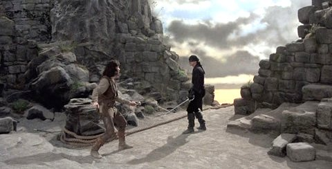
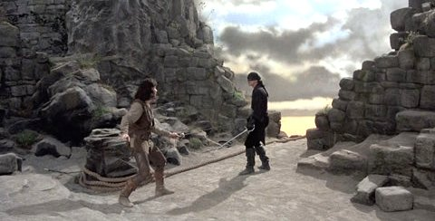

The film was shot in various locations in England and Ireland in late 1986: Carl Wark, Sheffield, England, Burnham Beeches, Buckinghamshire, England, Lathkill Dale where it meets Cales Dale (the "Battle of wits" scene), Cave Dale, Castleton, Derbyshire, England, Bradley Rocks and Robin Hood's Stride, Birchover, Derbyshire, England, Cliffs of Moher, County Clare, Ireland (for the Cliffs of Insanity), Haddon Hall, Bakewell, Derbyshire, England, Penshurst Place, Kent, England
The framing story scenes, the last to be filmed, were shot at Shepperton Studios in Surrey.
Reiner rented a house in England near these sites and frequently invited the cast over for meals and light-hearted get-togethers. Many cast members believed this helped to create a sense of "family" that helped to improve their performances for the film.
Cary Elwes and Mandy Patinkin learned to fence (both left- and right-handed) for the film, and performed these scenes themselves, outside of the two somersaults, which were performed by stunt doubles. They were trained by fencing instructors Bob Anderson and stunt arranger Peter Diamond, both of whom had also worked on training the actors in the original Star Wars trilogy. Elwes and Patinkin spent about three weeks prior to filming learning to fence, and spent most of their off-camera free time practicing.[6][18] Anderson encouraged the two to learn the other's choreography for the fight to help them anticipate the movements and avoid an accident.[6] They also watched many sword fights from previous films to see how they could improve on those.
André the Giant had undergone major back surgery prior to filming and, despite his great size and strength, could not support the weight of Elwes during their fight scene or Wright for a scene at the end of the film. For the wrestling scene, when Elwes hangs on André's back, he was actually walking on a series of ramps below the camera during close-ups. For the wide shots, a stunt double took the place of André. When he was apparently carrying Wright, she was actually suspended by cables.
Billy Crystal and Carol Kane spent time before traveling to England to work out the backstory between Miracle Max and his wife, and develop a rapport for their characters. Once on set, Reiner allowed them to improvise some of their lines.
PRODUCTION
 
